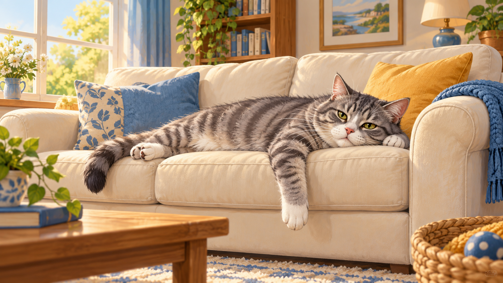
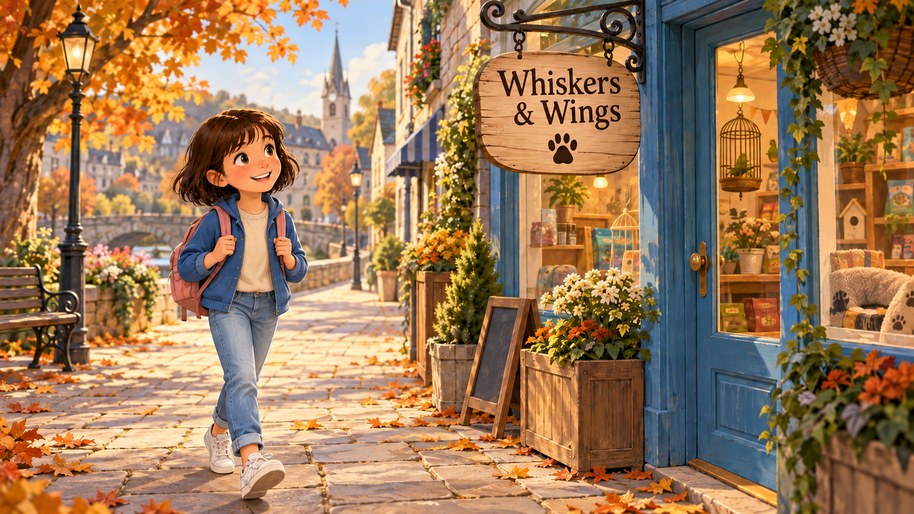
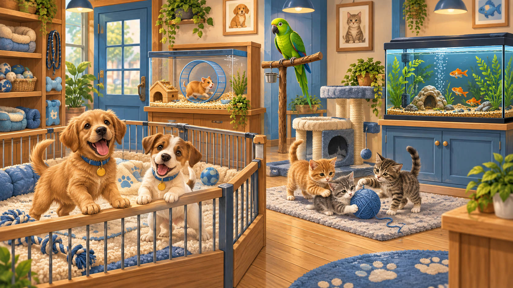
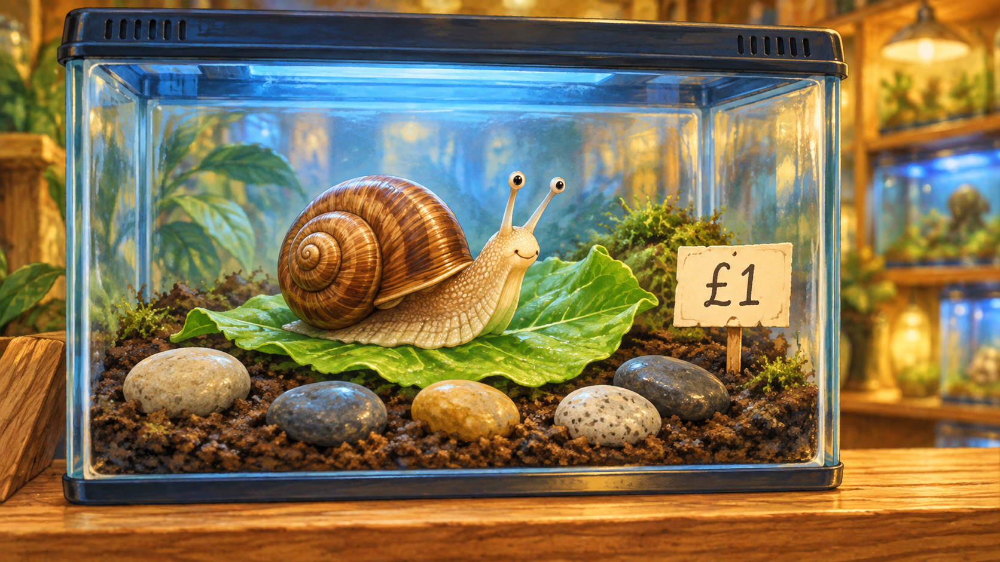
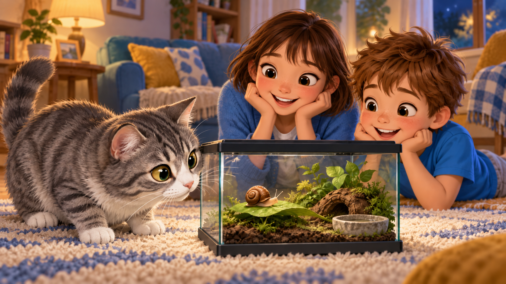
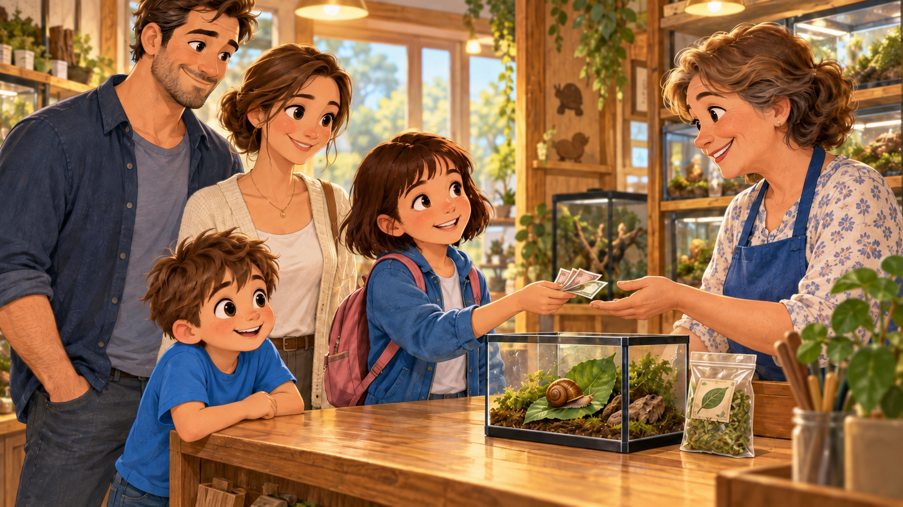
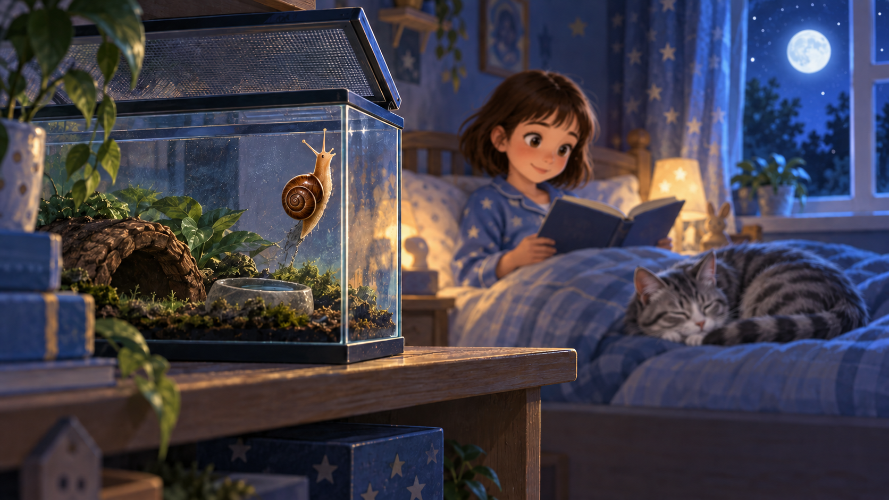

It is Saturday morning. Julia is at home with her cat Barsik. Barsik is bored. He is lying on the sofa and looking at the ceiling.
Julia says, "Barsik, you need a friend. Let's go to the pet shop!"

Julia puts on her jacket. She takes a small bag. She walks down the street to Whiskers & Wings — the pet shop on the corner.
Barsik stays at home. Cats do not go to pet shops. 🐱

Julia opens the door. Ding-dong! A bell rings. Inside, she sees many animals.
🐶 Three puppies bark from a big cage. Woof woof!
🐱 Two kittens play with a ball of wool. They are very small.
🦜 A green parrot sits on a stick. It says, "Hello! Hello! How are you?"
🐹 A hamster runs in a little wheel. Round and round!
🐠 Ten orange fish swim in an aquarium. They are very quiet.

Julia thinks. "A dog is too big. A cat — I already have one. A parrot is too loud. A hamster smells. Fish are boring."
She walks to the back of the shop. There, on a small shelf, she sees a glass tank. Inside the tank there is a… snail. 🐌
The snail is small. The snail is quiet. The snail is slow. Barsik cannot eat a snail — a snail has a shell.
"Perfect!" says Julia. "I want this snail!"
Julia takes the snail, a small tank, some snail food and five little rocks. She goes to the cash desk.
The total is £15. Julia pays in cash. She gets a receipt.

Julia comes home. Barsik looks at the tank. He looks at the snail. He looks at Julia. 👀
Julia says, "Barsik, this is Turbo. Turbo is your new friend."
Barsik sniffs the glass. The snail does not move. Barsik is confused. Julia laughs. "Perfect friend." 😹

A Sunday at Whiskers & Wings
Last Sunday morning, Julia's family had a big argument. It started at breakfast. Julia's dad said, "We should get a dog. A dog is a real pet." Julia's mum shook her head. "A dog is too much work. Let's get a small bird — a beautiful yellow canary. Birds are quiet." John, Julia's little brother, banged the table. "No! I want a lizard! Lizards are cool! My friend Toby has a green one." Julia listened to everyone and said calmly, "I want a snail."
Everybody laughed. "A snail is not a pet, Julia!" said John. But Julia's mum smiled. "OK. Let's all go to the pet shop and decide together."
They all put on their jackets and walked to Whiskers & Wings — the small pet shop on the corner. When they came in, Julia's dad went straight to the puppies. He looked at a golden brown one and said, "This dog is perfect!" Julia's mum was already talking to a yellow canary in a big cage. "Hello, beautiful bird," she said. John was sitting on the floor watching two little lizards behind the glass.
Julia walked slowly to the back of the shop. There, on a wooden shelf, she saw a small glass tank with one tiny snail inside. The snail was moving very, very slowly across a green leaf. Julia smiled. "Perfect," she whispered.
They came back together at the cash desk. Dad said, "The dog costs £400." Mum said, "The canary is £75." John said, "The lizard is £120!" Julia opened her small hand. Inside was one pound coin. "The snail is £1," she said.
For a moment, everyone was quiet. Then Dad laughed. "Well, Julia wins. Let's take the snail home."
Julia named the snail Turbo. Barsik, their old grey cat, was not sure at first. But by the evening, he was sitting next to the tank and watching Turbo very carefully. Turbo did not move. Barsik did not move. The house was quiet — for the first time all Sunday.
Can I have + a / some + noun + , please?How much is + it / this snail / the tank ?Do you have + a / any + noun ?I / you / we / they + verb · he / she / it + verb-sam / is / are + verb-ing| Type | Present Simple (every day) | Present Continuous (right now) |
|---|---|---|
| 1 · Yes/No | Do you have a cat? — Yes, I do. / No, I don't. |
Are you feeding the cat? — Yes, I am. / No, I'm not. |
| 2 · Wh- (what/where/when/why) | What do you feed your cat? — I feed her fish and dry food. |
What are you feeding her now? — I'm feeding her tuna. |
| 3 · Or (choice) | Do you have a cat or a dog? — I have a cat. |
Are you playing or reading? — I'm reading. |
| 4 · Tag (…, don't you? / …, aren't you?) | You have a cat, don't you? — Yes, I do! |
You are feeding the cat, aren't you? — Yes, I am! |
verb-ed · irregular verbs: went · saw · bought · took · paid · came · sat · saidwas / were + verb-ingIt was Sunday night. Julia was reading a book in bed. Barsik was sleeping at her feet.
Turbo the snail was sitting quietly in his tank on the shelf. 🐌

At midnight, Julia heard a tiny sound. Click. Click. She turned on the light. 💡
The tank was open! Turbo was climbing up the glass wall. He was escaping!
Julia jumped out of bed. Barsik jumped too. They both looked at the shelf.
But Turbo was not in the tank. He was moving very slowly across the floor.
Barsik was watching. His tail was moving from side to side. Slow, slow, slow — but Turbo was moving even slower.
Julia laughed. She picked up Turbo. She put him back in the tank. She closed the lid. 🧊
Then she gave Barsik a treat. "Good cat," she said. 🍖
They all went back to sleep. Turbo, in his tank. Barsik, on the bed. Julia, with her book. 📚
+ed. Irregular = you learn them.was / were + -ing.Imagine you go to a pet shop today. Answer aloud:
Правило: перевернуть → прочитать вслух → ответить полным предложением. Не одним словом!
32 words · 20 irregular verbs · 2 magic shop-phrases · 6 more pets · Past Simple + Past Continuous.
Say them all once tonight before bed and once again tomorrow morning — that's how they stick. And when you tell Mum and Dad what you learned, use the past tense, not the present.